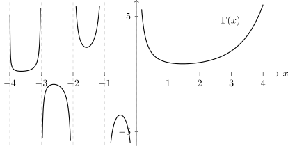

3.2 Legendre Polynomials
Definition 3.2.1. Legendre polynomials are defined by Rodrigues’ formula \[P_n(x) = \frac {1}{2^n\, n!}\, \frac {d^n}{dx^n}(x^2-1)^n\, , \hspace {0.4cm} n = 0, \, 1, \, 2, \, \cdots \]
Thus for \(n = 0, \, 1, \, 2, \, 3, \, 4, \, \cdots \) we have \[P_0(x) = 1, \,\hspace {0.5cm} P_1(x) = x, \,\hspace {0.5cm} P_2(x) = \frac {3}{2}x^2 - \frac {1}{2}, \,\hspace {0.5cm} P_3(x) = \frac {5}{2}x^3 - \frac {3}{2}x, \,\hspace {0.5cm} P_4(x) = \frac {35}{8}x^4 - \frac {30}{8}x^2 + \frac {3}{8}.\]

Using the Binomial expansion, we can rewrite the expression for the \(n^{\text {th}}\) Rodrigues’ \[(x^2 - 1)^n = \sum _{k = 0}^n \frac {(-1)^k\, n!}{k!\, (n - k)!}\, x^{2(n-k)},\] so that \[P_n(x) = \sum _{k = 0}^{[n/2]} \frac {(-1)^k\, (2n - 2k)!}{2^n\, k!\, (n - k)!\, (n - 2k)!}\, x^{n-2k},\] where \([n/2]\) denotes the largest integer \(\leq \frac {n}{2}\) from Rodrigues’ formula, it follows that \(P_n(x)\) is a polynomial of degree \(n\), and the coefficient of \(x^n\) is \[\frac {\binom {2n}{n}}{2^n}\] We can normalise \(P_n(x)\) by multiplying the coefficients by \(2^n/\binom {2n}{n}\), so that the coefficient of \(x^n\) is 1.
3.2.1 Generating Function
Another definition of Legendre polynomials is obtained by means of the generating function, \[g(x,r) = \frac {1}{(1 - 2rx + r^2)^{1/2}},\] by expanding it in as a power series for sufficiently small values of \(r\). The coefficient of \(r^n\) in this expansion turns out to be \(P_n(x)\), \(\, n = 0, \, 1, \, 2,\, \cdots \) that is \[g(x,r) = \sum _{n = 0}^{\infty } P_n(x) \, r^n.\]
To show this, consider expanding \((1 - z)^{-1/2}\) in a neighborhood of zero, where \begin {align*} z & = 2rx - r^2,\\ & = 1 + \frac {1}{2}z + \frac {3}{8}z^2 + \frac {5}{16}z^3 + \, \cdots \cdots \, , \hspace {0.3cm} |z| < 1\\ & = 1 + \frac {1}{2}(2rx - r^2) + \frac {3}{8}(2rx - r^2)^2 + \frac {5}{16}(2rx - r^2)^3 + \, \cdots \cdots \, \\ & = 1 + rx + \left (\frac {3}{2}x^2 - \frac {1}{2}\right )r^2 + \left (\frac {5}{2}x^3 - \frac {3}{2}x\right ) r^3 + \, \cdots \cdots \end {align*}
We observe that the coefficient of \(1, \, r, \, r^2\,\) and \(\, r^3\,\) are exactly, \(P_0(x), \, P_1(x),\, P_2(x)\) and \(P_3(x)\) respectively.
We generalise thus by the recurrence relation below.
We have \[g(x,r) = \frac {1}{(1 - 2rx + r^2)^{1/2}}.\] Differentiating this with respect to \(r\), we get, from \[(1 - 2rx + r^2)^{\frac {1}{2}}\, g(x, r) = 1\] \[(1 - 2rx + r^2)^{\frac {1}{2}}\, \frac {\partial }{\partial r}g(x, r) + \frac {1}{2}(1 - 2rx + r^2)^{-\frac {1}{2}}\, (-2x + 2r)\, g(x,r) = 0\] \[(1-2rx + r^2) \frac {\partial }{\partial r}g(x,r) - (x-r)g(x,r) = 0\] substituting \[g(x,r) = \sum _{n=0}^{\infty }P_n(x)\, r^n,\] get \[(1 - 2rx + r^2) \sum ^{\infty }_{n=1}n\, P_n(x)\, r^{n-1}\, -(x-r)\sum _{n=0}^{\infty } P_n(x)\, r^n = 0.\] The coefficient of \(r^n\) must be zero for each \(n\) and for all values of \(x\), we thus have \[(n+1)\, P_{n+1}(x) - (2n +1)xP_n(x) + nP_{n-1}(x) = 0,\] for \(n = 1, \, 2,\, 3,\, \cdots \)
This relation connects three successive Legendre polynomials, e.g for \[P_2(x) = \frac {3}{2}x^2 - \frac {1}{2}\, , \hspace {0.5cm} P_3(x) = \frac {5}{2}x^3 - \frac {3}{2}x,\] then \[P_4(x) = \frac {1}{4}\left [7x\, P_3(x) - 3P_2(x)\right ] = \frac {35}{8}x^4 - \frac {30}{8}x^2 + \frac {3}{8}.\]
Example 3.2.2. Using \[g(x,r) = \sum _{n=0}^{\infty } P_n(x)\, r^n\] and \(x = 1,\, -1, \, 0,\) show that \[P_n(1) = 1, \hspace {0.3cm} P_n(-1) = (-1)^n\] \[ P_{2n}(0) = \frac {(-1)^n\, \cdot \, 1\, \cdot \, 3\, \cdots \, (2n-1)}{2\, \cdot \, 4\, \cdots \, 2n},\] \(P_{2n+1}(0) = 0.\)
Working. For \(x = 1\), we have \[\sum _{n=0}^{\infty } P_n(1)\, r^n = g(1,r) = \frac {1}{(1 - 2r + r^2)^{\frac {1}{2}}} = \frac {1}{1 - r},\] geometric i.e \(\sum ^{\infty }_{n=0} r^n.\)
Thus comparing coefficients, get \(P_n(1) = 1,\) \(\, x = -1\), gives \begin {align*} \sum _{n=0}^{\infty } P_n(-1)\, r^n & = g(-1,r)\\ & = \frac {1}{(1 + 2r + r^2)^{\frac {1}{2}}}\\ & = \frac {1}{1 + r}\\ & = \sum ^{\infty }_{n=0} (-1)^n\, r^n. \end {align*}
Thus, \(P_n(-1) = (-1)^n.\)
\(x = 0\) gives \[\sum _{n=0}^{\infty } P_n(0)\, r^n = g(0,r) = \frac {1}{(1 + r^2)^{\frac {1}{2}}}\] Using the binomial expansion for rational powers \[(1 + r^2)^{-\frac {1}{2}} = 1 - \frac {1}{2}r^2 + \frac {\left (-\frac {1}{2}\right )\left (-\frac {3}{2}\right )}{2!} r^4 + \frac {\left (-\frac {1}{2}\right )\left (-\frac {3}{2}\right )\left (-\frac {5}{2}\right )}{3!} r^6 + \, \cdots \, + \frac {(-1)(-3)(-5)\, \cdots \, (-(2n-1)}{2^n\, n!} \, + \, \cdots \] Hence, \[P_{2n}(0) = \frac {(-1)^n\, \cdot \, 1\, \cdot \, 3\, \cdot \, 5\, \cdot \, \cdots \, (2n-1)}{2\, \cdot \, 4\, \cdot \, \cdots \, 2n}.\] Further \(P_{2n+1}(0) = 0.\) [coefficient for odd powers is zero] □
Further Recurrence Relations
From \[g(x,r) = \frac {1}{(1 - 2rx + r^2)^{\frac {1}{2}}},\] get \[(1 - 2rx + r^2)^{\frac {1}{2}}\, g(x,r) = 1.\] Differentiating with respect to \(x\), get \[(1 - 2rx + r^2)\frac {\partial }{\partial x}g(x,r) - r\, g(x,r) = 0.\] But \[g(x,r) = \sum _{n=0}^{\infty } P_n(x)\, r^n,\] so replacing, get \[(1 - 2rx + r^2)\sum _{n=0}^{\infty } P_n'(x) r^n - \sum _{n=0}^{\infty } P_n(x)\, r^{n+1} = 0\] which implies \begin {equation} P_{n+1}'(x) - 2xP_n'(x) + P_{n-1}'(x) - P_n(x) = 0, \hspace {0.5cm} n=1,\, 2,\, 3,\, \cdots \end {equation}
Now using \[(n+1)P_{n+1}(x) - (2n+1)xP_n(x) + n P_{n-1}(x) = 0\] derived in 4.2.1, and differentiating with respect to \(x\), get \begin {equation} (n+1)\, P_{n+1}'(x) - (2n+1) \, P_n(x) - (2n + 1)\, x\, P'_n(x) + nP'_{n-1}(x) =0. \end {equation}
Eliminating \(P'_{n-1}(x)\) from (4.1) and (4.2), get multiplying equation (4.1) by \(n\) we obtain \[n P_{n+1}'(x) - 2x nP'_n(x) + nP'_{n-1}(x) -n P_n(x) = 0\]
\[(n+1) P'_{n+1}(x) - (2n+1)P_n(x) - (2n+1)xP_n'(x) + n P'_{n-1}(x) = 0\] subtracting equation (4.1) from (4.2) \[P'_{n+1}(x) - (n+1)P_n(x) - xP'_n(x) = 0\] or \begin {equation} P'_{n+1}(x) - xP_n'(x) = (n+1)P_n(x) \end {equation}
Similarly, eliminating \(P'_{n+1}(x)\) from (4.1) and (4.2), we get \begin {equation} xP'_n(x) - P'_{n-1} (x) = nP_n(x) \end {equation}
Adding (4.3) and (4.4), get \[P'_{n+1}(x) - P'_{n-1}(x) = (2n+1) P_n(x), \, \hspace {0.5cm} n = 1, \, 2,\, 3, \, \cdots \] Replacing \(n\) by \(n-1\) in (4.3), get \begin {equation} P'_n(x) - xP'_{n-1}(x) = nP_{n-1}(x). \end {equation}
Then we eliminate \(P'_{n-1}(x)\) from (4.4) and (4.5), get (by multiplying equation 4.4 by \(x\)) \[x^2P'_n(x) - xP'_{n-1}(x) = xnP_n(x)\] \[P'_n(x) - x P'_{n-1}(x) = n P_{n-1}(x)\] implies that \begin {equation} (x^2-1)P_n'(x) = nP_{n-1}(x) - n xP_n(x). \end {equation}
Differentiating (4.6) with respect to \(x\) and then using (4.4) to eliminate \(P'_{n-1}(x)\), we get \[\left [(1-x^2)P_n'(x)\right ]' + n(n+1) P_n(x) = 0\] which shows that \(U=P_n(x)\) is a particular integral of the second order differential equations.
\[\left [(1-x^2)U'\right ]' + n(n+1) U = 0.\]
3.2.2 Orthogonality of Legendre Polynomials
Orthogonality of Legendre polynomials on the interval \([-1,1]\) follows from the Legendre differential equations \[\left [(1-x^2)\, P'_n(x) \right ]' + n(n+1)\, P_n(x) = 0\hspace {0.5cm} n = 0,\, 1, \, 2,\, \cdots \] We have \begin {equation} \left [(1 - x^2)\, P_n'(x)\right ]'\, P_m(x) + n(n+1)\, P_n(x)\, P_m(x) = 0 \end {equation} and \begin {equation} \left [(1-x^2)\, P'_m(x)\right ]'\, P_n(x) + m(m+1)\, P_m(x)\, P_n(x) = 0 \end {equation} subtracting (4.7) from (4.8), get \[\left \{(1-x^2)\, \left [P'_m(x)\, P_n(x) - P_n'(x)\, P_m(x)\right ]\right \}' + (m-n)(m+n-1)P_m(x)P_n(x) = 0.\] Integrating this last equation over \([-1,1]\) and noting that the first integral vanishes, get \[(m-n)(m+n+1)\int _{-1}^1P_m(x)\, P_n(x)\, dx = 0\] i.e \[\int _{-1}^1P_m(x)\, P_n(x)\, dx = 0 \hspace {0.7cm} \text {when}\,\,\, m\neq n.\]
Further, it can be shown that \[\int _{-1}^1P_n^2(x)\, dx = \frac {2}{2n + 1}\, , \hspace {0.6cm} n = 0, \, 1, \, 2, \, \cdots \]
To show this, one uses a recurrence relation \begin {equation} (n+1)P_{n+1}(x) - (2n+1)xP_n(x) + nP_{n-1}(x) = 0, \hspace {0.5cm} n = 1, \, 2,\, \cdots \end {equation} Reduce \(n\) by \(n-1\) in (4.9) and multiply the result by \((2n+1)P_n\).
Then from this equation we subtract (4.9) multiplied by \((2n-1)P_{n-1}(x)\).
Finally integrate the result over \([-1,1]\), noting orthogonality to get \begin {align*} \int _{-1}^1P_n^2(x)\, dx & = \frac {2n - 1}{2n+1}\int _{-1}^1P^2_n(x)\, dx\\ & = \frac {3}{2n+1}\int _{-1}^1P^2_1(x)\, dx \hspace {0.6cm} \text {letting} \,\,\, n-1 = 1 \implies n = 2\\ & =\frac {2}{2n+1}. \end {align*}
3.2.3 Expansion of a Function using Legendre
Suppose that \(f(x)\) is a function defined on \([-1,1]\) such that \[\int _{-1}^1f(x)\, P_n(x)\, dx\hspace {0.6cm} \text {exists for }\,\, \, \, n = 0,\, 1,\, 2, \, \cdots \]
Consider the series \begin {equation} f(x) = \sum _{i=0}^{\infty } a_iP_i(x). \end {equation} Multiplying both sides of (4.10) by \(P_n(x)\) and integrating over \([-1,1]\), get \[\int _{-1}^1f(x)\, P_n(x)\, dx = \int _{-1}^1a_n\, P^2_n(x)\, dx\, , \hspace {0.3cm} n = 0,\, 1,\, 2, \, \cdots \] Thus \begin {align*} a_n & = \left [\int _{-1}^1P^2_n(x)\, dx \right ]^{-1}\, \int _{-1}^1f(x)\, P_n(x)\, dx\\\\ & = \frac {2n + 1}{2}\int ^1_{-1} f(x) \, P_n(x)\, dx. \end {align*}
Recall Fourier series \[f(x) = \sum _{n=0}^{\infty }\left [a_n\cos nx + b_n \sin nx\right ].\]
Example 3.2.3. Suppose \[f(x) = \begin {cases} 0, & -1\leq x \leq \alpha \\ 1, & \alpha x \leq 1.\\ \end {cases}\] Expand \(f(x)\) in series of Legendre polynomials.
Working. Using the recurrence relation \[P'_{n+1}(x) - P'_{n-1}(x) = (2n + 1)P_n(x), \hspace {0.4cm} n = 1, \, 2, \, \cdots \] we have \begin {align*} a_n & = \frac {2n + 1}{n} \int _{\alpha }^1P_n(x) \, dx\\ & = \frac {1}{2}\int _{\alpha }^1\left [P'_{n+1}(x) - P_{n-1}'(x)\right ]\, dx\\ & = \frac {1}{2}\left [P_{n+1}(x) - P_{n-1}(x)\right ]'_{x=\alpha }\\ & = -\frac {1}{2}\left [P_{n+1}(\alpha ) - P_{n-1}(\alpha )\right ]\, , \hspace {0.5cm} \text {since}\,\,\, P_n(1) = 1. \end {align*}
Hence \[f(x) = \sum _{i=0}^{\infty } a_i \, P_i(x) = \frac {1}{2}(1 - \alpha )-\frac {1}{2}\sum _{i=1}^{\infty } \left [P_{i+1}(\alpha ) - P_{i-1}(\alpha )\right ]\, P_i(x).\] □
- 1.
- Show that the sequence
\[\left \{\frac {1}{\sqrt {2}}, \, \sin x, \, \cos x, \, \sin 2x, \, \cos 2x, \, \cdots \, , \, \sin nx, \, \cos nx\right \}\]
is orthogonal with respect to \(w(x) = \frac {1}{\pi }\) over \([-\pi , \pi ]\).
Hint: \[ \int _{-\pi }^{\pi } \frac {1}{\sqrt {2}}\, \sin nx\, dx\, , \hspace {0.5cm} \int _{-\pi }^{\pi } \frac {1}{\sqrt {2}}\, \cos nx\, dx\, , \hspace {0.5cm} \int _{-\pi }^{\pi } \sin nx\, \cos nx\, dx\] - 2.
- If \(f(x) = |x|, \,\, -1 \leq x \leq 1\), show that \[f(x) = \sum _{n=0}^{\infty } a_n\, P_n(x) = \sum _{n=0}^{\infty } \frac {(-1)^{n+1}\,(4n+1)\, (2n-2)!}{2^{2n}\, (n+1)!\, (n-1)!}\, P_{2n}(x).\] Hint: At some stage \[a_n = 2\int _0^1 x\, P_n(x)\, dx,\] use recurrence relation when \(n=\) odd \(\implies n\) is will be zero.
- 3.
- Show that \[\int _{-1}^1x\, P_n(x)\, P_{n-1}(x)\, dx = \frac {2n}{4n^2 - 1}.\]
- 4.
- If \[\begin {cases} \frac {1}{2}\, , & 0 < x < 1\\ -\frac {1}{2}\, , & -1 < x < 0\\ \end {cases}\] expand \(f(x)\) in the form \(\sum _{n=0}^{\infty }a_n\, P_n(x)\).
Questions on this section
Stuck on something here? Ask below and it stays attached to this topic.